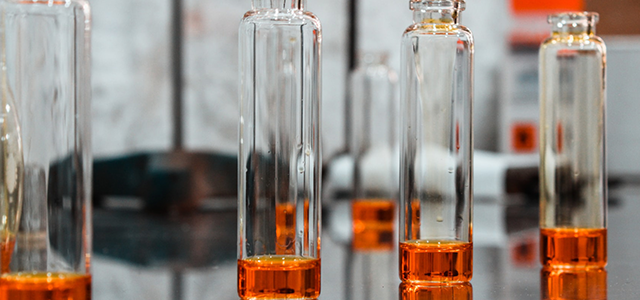

제품
-

아크릴로트릴
아크릴로니트릴은 무색/무취의 인화성 있는 유독성 액체로서 프로필렌과 암모니아를 주원료로 생산합니다. 당사 아크릴로니트릴의 특징은 관계사인 일본의 아사히카세이에서 직접 개발된 고효율 촉매를 사용합으로써 품질이 우수하고 안정적인 것입니다.
생산능력 600,000 T/년 제품규격 99.5% UP 제품의 용도 - 아크릴 : 스웨터, 모포
- ABS 수지 : 컴퓨터 모니터, TV 케이스, 카메라케이스, 라디오케이스, 전화기케이스등
- NBR : 신발창, 팩킹, 가스켓, 호스등
- SAN 수지 : 냉장고, 라이터, 통신기기, 에어컨 부품용 소재
- 기타 : 아디포니트릴, 아크릴아마이드, 접착제, 염료등의 원료포장 In Bulk 운송수단 선박, 탱크로리, ISOContainer 연락처 E-mail : khkim@tspc.co.kr, TEL : 02) 3215-0710~0711,
FAX : 02) 3215-0770 (상담문의:영업1팀) -
청화소다
청화소다는 청산과 가성소다를 원료로 합성하여, 정제 공정 및 결정화 공정을 거쳐 순백색의 브리켓 형태로 제조됩니다. 청화소다는 광산 산업 및 전기도금, 의약, 농약 등 다양한 산업분야에 매우 유용하게 사용되지만 맹독성의 물질로서 (악의적인 용도로 사용될 가능성이 있으므로) 사용 및 판매에 주의를 기울여야합니다. 이와 관련 정부에서는 대외무역법에 청화소다를 전략물자로 규정하여 법으로 수출을 통제하고 있습니다.
동서석유화학은 현재 연 70,000t의 생산능력을 가지고 있는 세계 정상급의 청화소다 공급사로서, 최신 기술 및 교육, 운송 시스템을 활용하여 고객들에게 안정적으로 청화소다를 공급하고 있습니다. 또한, 세계 유수의 광산 업계의 기준에 부합하여 ISO 9001, ICMC등 국제적인 기준을 준수하고 있으며, 고객들의 안전하고 전문적인 청화소다 사용을 위해 필요한 기술 및 안전자료, 교육, 홍보자료를 제공하고 있습니다.
생산능력 70,000 T/년 제품규격 99.5% UP 제품의 용도 - 금광용 : 원광석에서 금, 은 등의 귀금속 추출
- 도금용 : 금, 은, 동 등의 도금
- 기타 : 금속의 열처리, 농약, 의약, 도금약품제조, EDTA의 원료포장 In Bulk 운송수단 국내 : 트럭, 수출 : 컨테이너 선박 연락처 E-mail : jkchoi@tspc.co.kr, TEL : 02-3215-0721, 0725 FAX : 02) 3215-0770
(상담문의:영업2팀)